About
About Projects
Projects Games
Games Stories
Stories Store
Store Hobby
Hobby Notes
Notes How-to
How-toView my full list of publications.
Illustrations done for children's books, or for educational books and magazines aimed at children.

A look at inside illustrations for Mirmaelle: Une mission sans peur.

Full page illustration from La Cabane Dans L'Arbre, written by Danielle Charland, and published by Bayard Canada in 2016.

Spot illustration for La Cabane Dans L'Arbre.

Spread illustration for La Cabane Dans L'Arbre.

Spot illustrations that are part of an educational series published by Cheneliere Education.

Spot illustrations for a story called Eaux Trouble, part of an educational series published by Cheneliere Education.

Spot illustrations for a Red Riding Hood story that is part of an educational series published by Cheneliere Education.

Spot illustrations that are part of an educational series published by Cheneliere Education.

Spot illustration for Les Araignées Monstres(2017), written by Édith Bourget and published by Éditions du Boréal.

Spread illustration for Les Araignées Monstres(2017), written by Édith Bourget and published by Éditions du Boréal.

Full page illustration for Les Araignées Monstres(2017), written by Édith Bourget and published by Éditions du Boréal.

Full page illustration for Opération Noel(2015), written by Édith Bourget and published by Éditions du Boréal.

Full page illustration for Opération Noel(2015), written by Édith Bourget and published by Éditions du Boréal.

A physical copy of Opération Noel(2015).

Spot illustration for Destination Monstroville: Le Laidorama(2015), Written by Sophie Rondeau and Nadine Descheneaux, published by Éditions Druide.

Spot illustration for Destination Monstroville: Le Ooz(2017), Written by Sophie Rondeau and Nadine Descheneaux, published by Éditions Druide.

Full page illustration for Destination Monstroville: Le Ooz(2017), Written by Sophie Rondeau and Nadine Descheneaux, published by Éditions Druide.

Spot illustration for Destination Monstroville: Le Ooz(2017), Written by Sophie Rondeau and Nadine Descheneaux, published by Éditions Druide.

Full page illustration for Destination Monstroville: La Bibliopet(2015), Written by Sophie Rondeau and Nadine Descheneaux, published by Éditions Druide.

Full page illustration for Destination Monstroville: La Bibliopet(2015), Written by Sophie Rondeau and Nadine Descheneaux, published by Éditions Druide.

Full page illustration for Destination Monstroville: Le Laidorama(2015), Written by Sophie Rondeau and Nadine Descheneaux, published by Éditions Druide.

Full page illustration for Des Rêves Fous, Fous, Fous, written by Bernadette Renaud and published by ERPI, 2011

Full page illustration for Des Rêves Fous, Fous, Fous.

Spot illustration for Le Catalogue De Robots, written by Jean-Pierre Guillet and published by Bayard Canada in 2013.

Character design for Skateboard Sibby written by Clare O'Connor and published by Secondstory Press in 2018.

Spot illustration for La Queue De L’Espionne, written by Danielle Simard and published by Bayard Canada in 2011.

Full page illustration for Kayak : Canada's History for Kids (issue 50, 2014).
Book Covers

 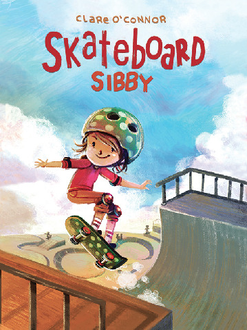
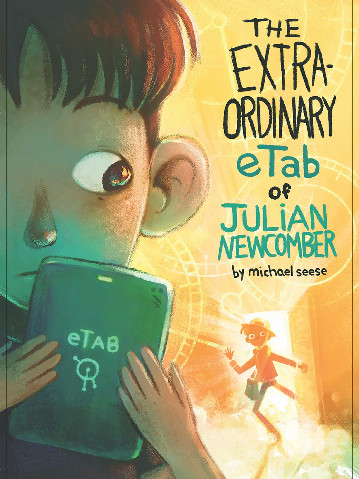
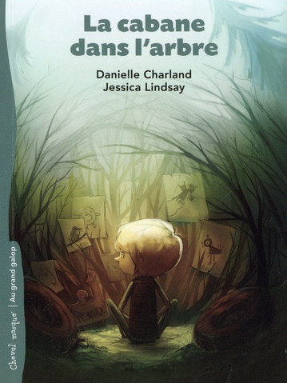
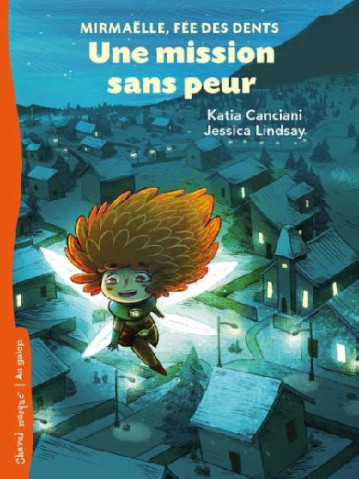
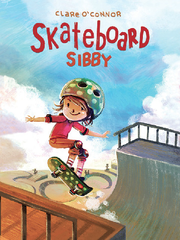
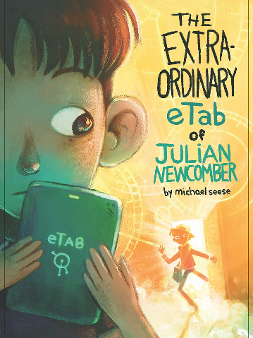
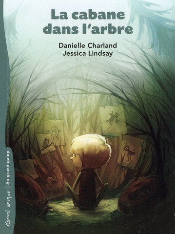
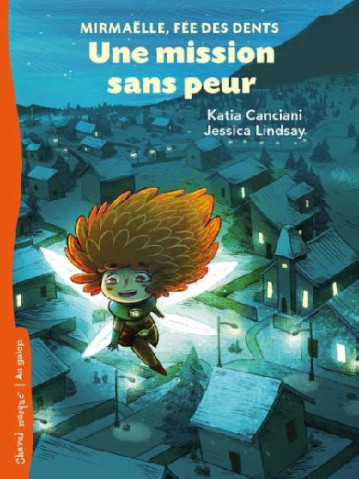
 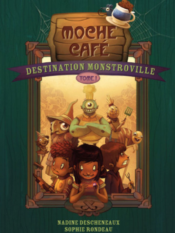
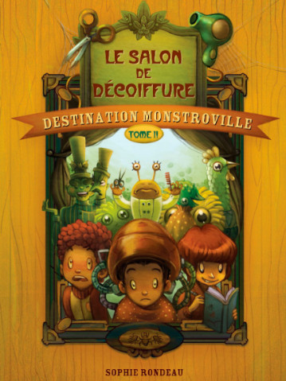
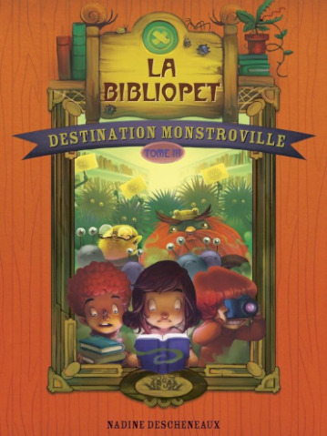
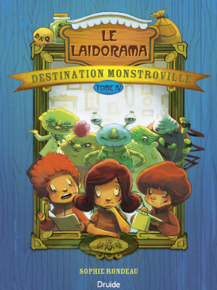
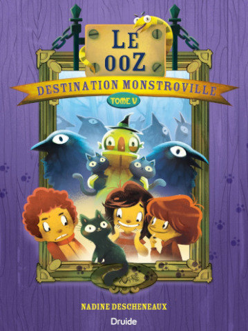
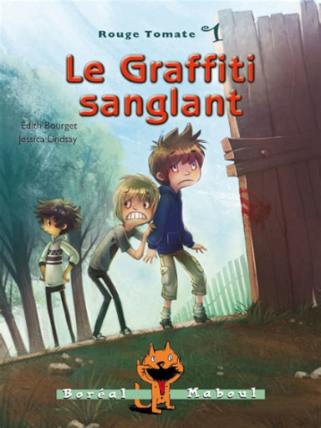
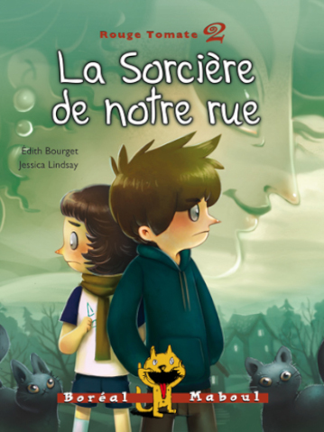
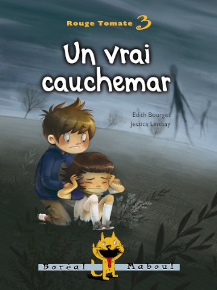
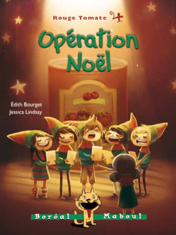
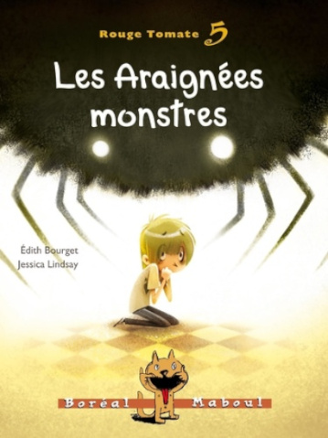
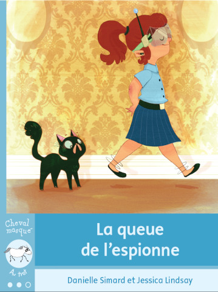
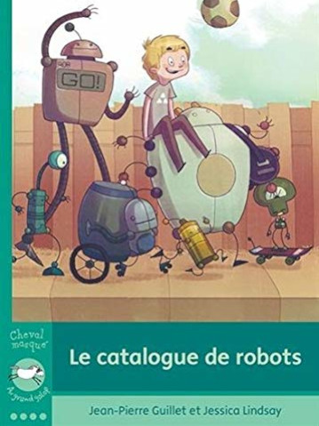
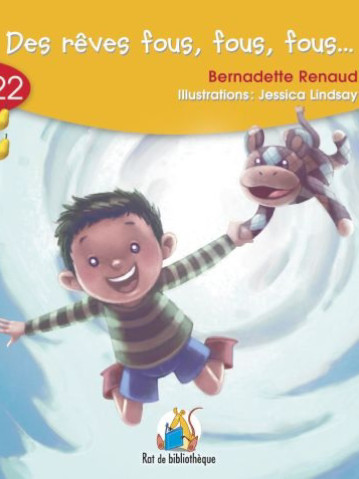
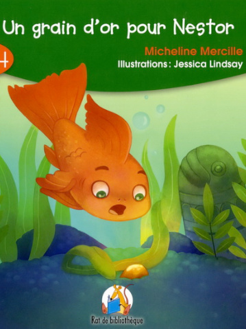
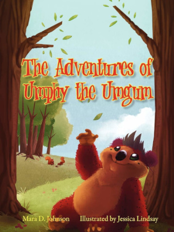
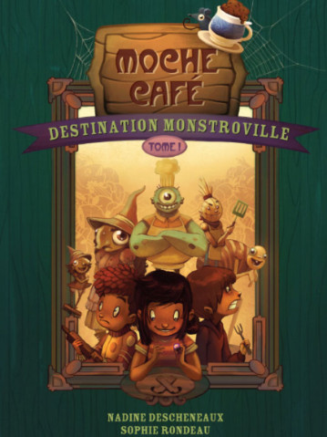
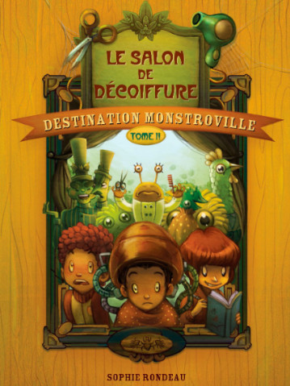
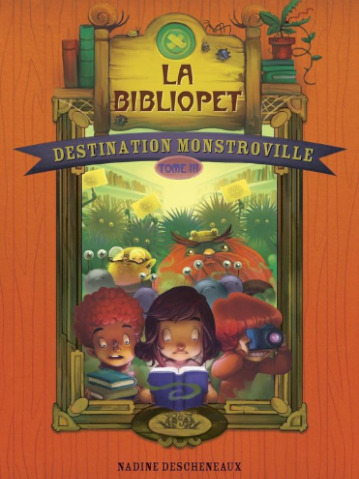
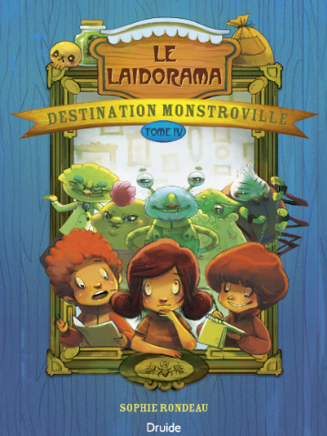
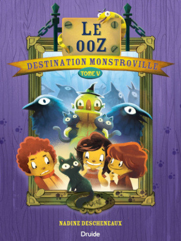
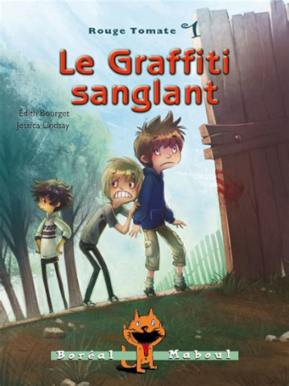
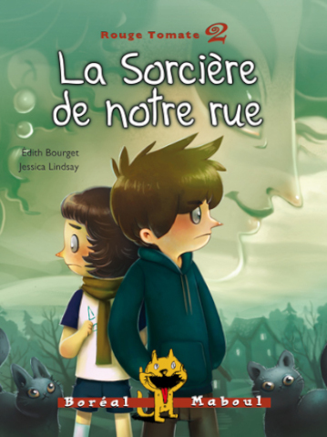
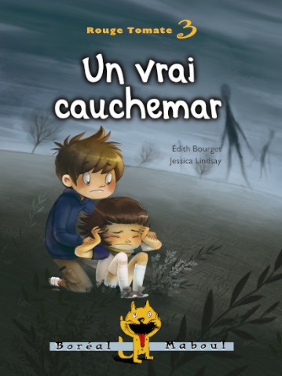
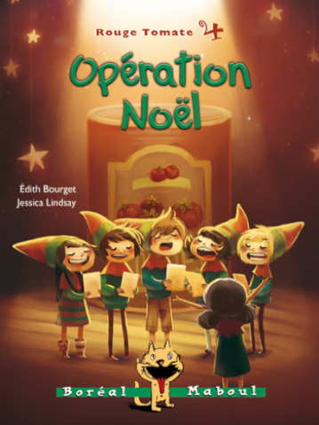
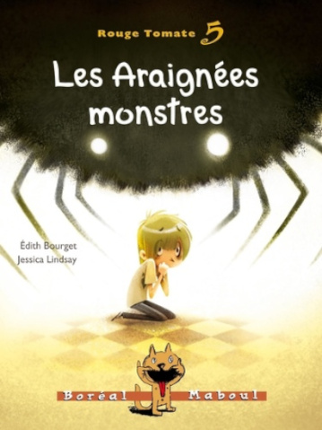
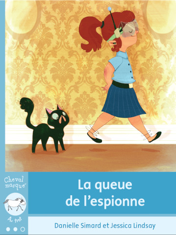
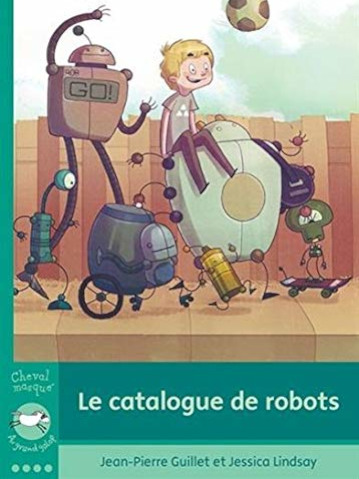
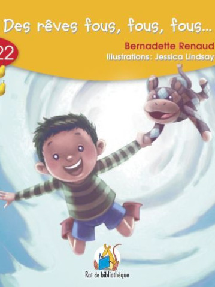
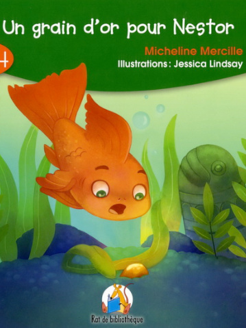
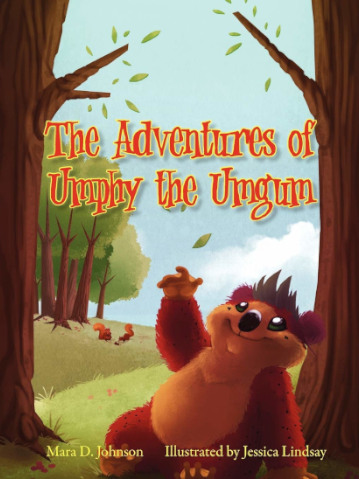